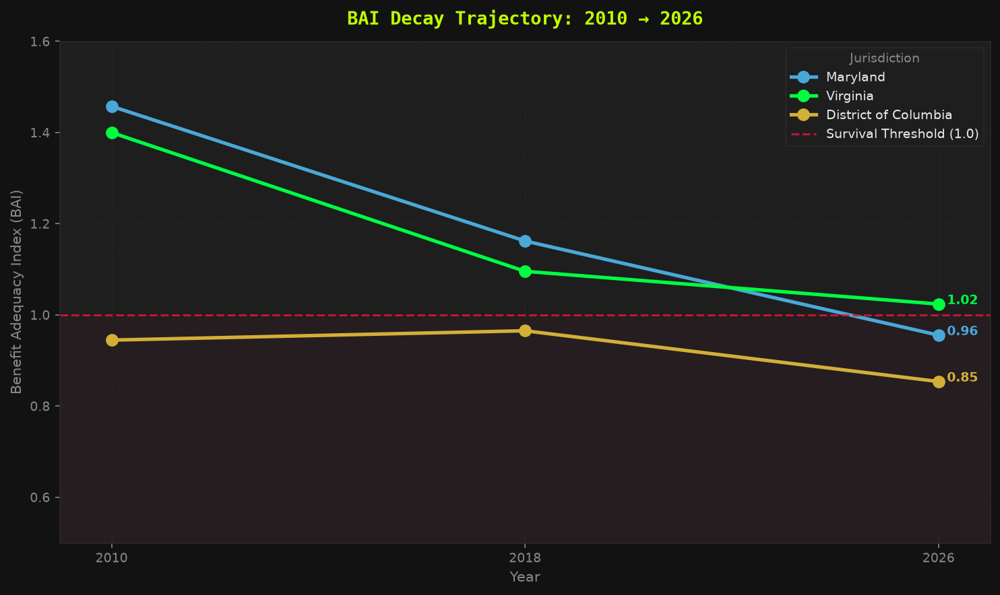
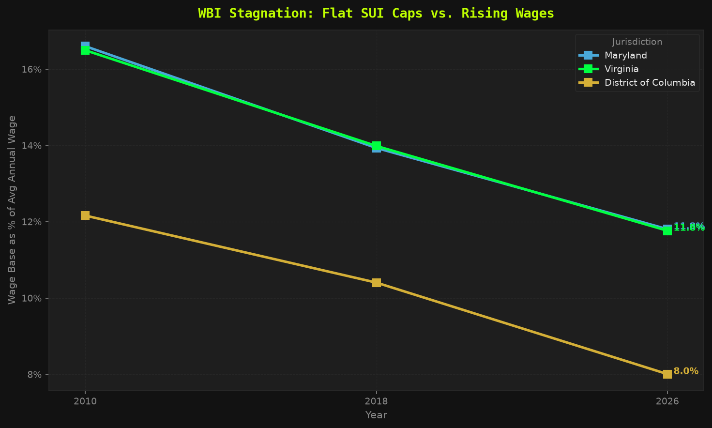
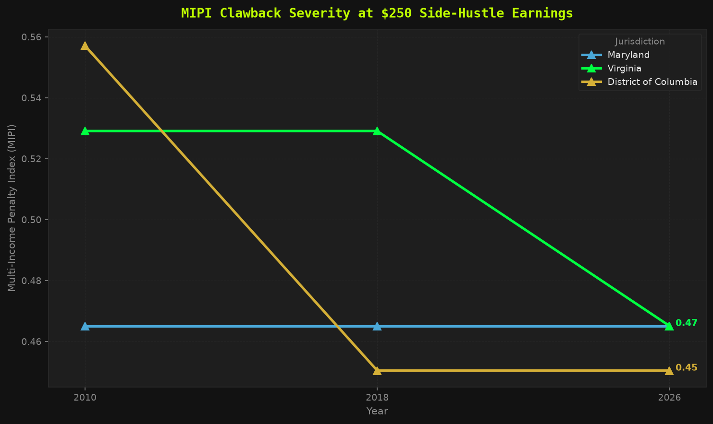
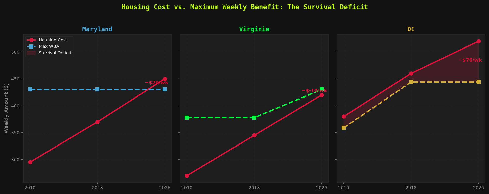
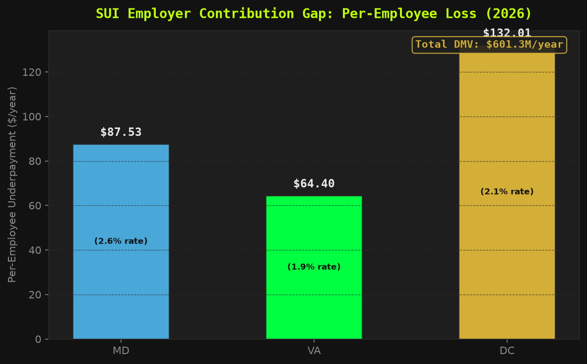
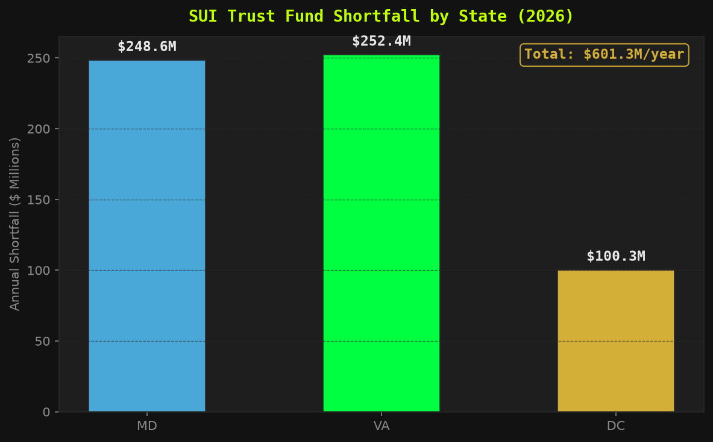
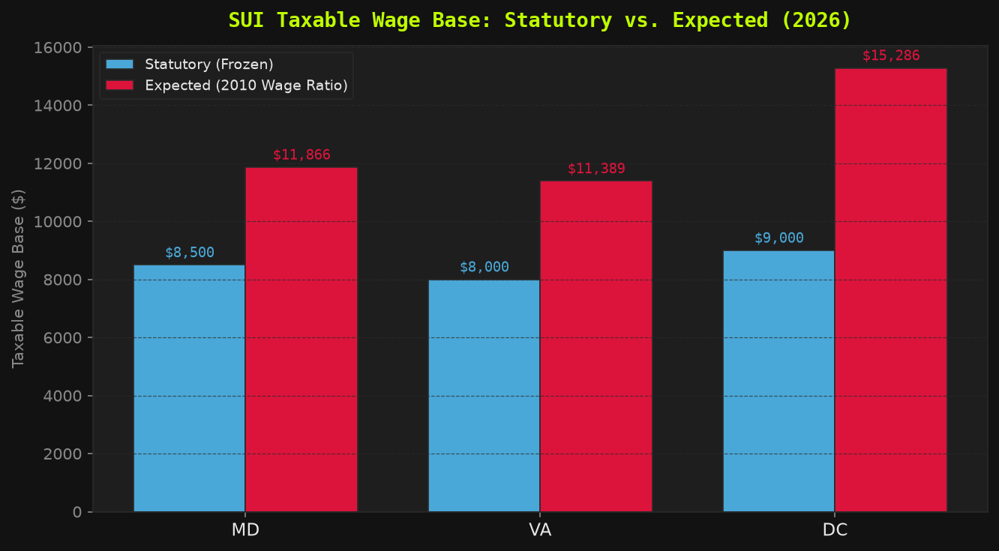
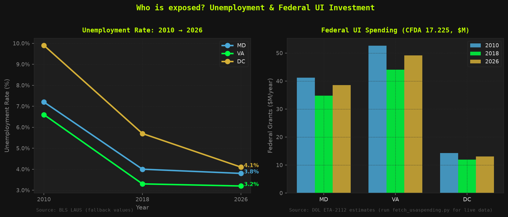

Forensic AuditPublic DataPolitical AccountabilityDMV 2010–2026Built in 1 Day · AI-Assisted
📊 The Stagnant Safety Net
The Robin Hood of AI · The Data Vigilante
A Tri-State Forensic Audit of Unemployment Insurance Decay
Sierra Napier, MPA | DC · Maryland · Virginia | 2010 → 2026 | BLS · USDOL · FEC · Census · HUD
I now know why they want to keep you sleeping. It's easier to rob you blind.
— The Data Vigilante
While you were busy surviving, three jurisdictions quietly let your unemployment safety net rot.
Benefits frozen. Wage bases locked. Trust funds drained. And the people with the power to fix it?
Funded by the same industries that profit from keeping your floor low.
This isn't a coincidence. This is the policy. Here are the receipts.
☕ Keep the Investigation Running
I'm currently unemployed — yes, actually living the data — and the APIs that power this
audit (FEC, Census, Congress.gov) cost real money to keep running. If this work matters to you,
buy me a coffee. Every dollar keeps the data flowing and the freeze exposed.
Built in one day using AI. This entire forensic audit — data pipeline, indices,
13 figures + 11 interactive charts + county GIS map, FEC API integration, political accountability layer, and this portfolio —
was architected and shipped in a single session using Claude (Anthropic).
If the machine can expose a $601M annual shortfall faster than a legislative committee can schedule a hearing,
maybe the problem isn't the technology.
Chapter 1 — Worker Insolvency: The BAI
Your unemployment check can't pay your rent — and it hasn't kept pace with housing for sixteen years running.
The Benefit Adequacy Index (BAI) answers one question:
can a laid-off worker still pay rent?BAI = Max WBA ÷ Weekly Housing Cost.
Below 1.0 is systemic failure — the benefit cannot cover housing alone,
before food, utilities, childcare, or transportation enter the equation.
Maryland's maximum weekly benefit has been $430 since 2014.
Not a typo. The same $430 across 12 years of wage growth, inflation, and a pandemic.
Meanwhile weekly housing costs in Maryland climbed from $295 to $450 —
a 52% increase. The safety net did not move. The cost of survival did.

Figure 1 — BAI decay across DC, Maryland, and Virginia (2010–2026). Source: BLS QCEW + HUD Fair Market Rents + State DOL benefit schedules. Maryland crossed below the 1.0 survival threshold by 2026. Virginia passed SB 1056 in January 2026 (+$52/week, first increase since 2014), bringing BAI to 1.02 — barely above the line. DC was already below threshold in 2010 and has no scheduled correction.
0.96
Maryland BAI 2026
1.02
Virginia BAI 2026 ↑ SB1056
0.85
DC BAI 2026
1.46 → 0.96
Maryland 16-yr decline
// Investigative Take — BAI
Maryland crossed below survival threshold sometime between 2018 and 2026. There was no press conference. No emergency session. The line just quietly dropped. Virginia got a $52/week fix in January 2026 — the first legislative action since 2014 — and is now exactly $10/week above failure. DC has been below threshold since at least 2010 and has no scheduled correction. Three jurisdictions. Sixteen years. Two remain in active failure. One just barely escaped — for now.
// FORENSIC FINDING — CH.1
Two of three jurisdictions can't cover rent on a full unemployment check — and the one that "passed" clears the bar by ten dollars a week. Nobody declared an emergency. The floor just dropped a little lower every year until it stopped being enough to live on.
The Real Value Index — inflation did the cutting
They didn't even have to take a vote. A $430 check frozen since 2014 is worth about $300 today — inflation quietly carved off nearly a third. Virginia froze all the way back in 2008, so its check sank to ~$244 in real money before the 2026 bump.
The Real Value Index (RVI) converts each jurisdiction's nominal frozen maximum weekly benefit into 2026 constant dollars using BLS CPI-U cumulative inflation.
RVI = Nominal WBA ÷ (1 + Cumulative CPI%).
The result is the purchasing power a claimant actually holds — not the number on the check.
A benefit frozen since 2014 has lost 29% of its real value by 2026.
A benefit frozen since 2008 has lost 35%. Nobody voted to cut it. The clock did.
Figure 8 — The Real Value Index: what each frozen maximum benefit is actually worth in 2026 dollars.
Source: BLS CPI-U (2014→2026 anchor: 40.67% cumulative; 2008→2026 anchor: ~54%). Maryland −29% · Virginia −35% (frozen since 2008 — the worst erosion) · DC −25%. A freeze is a pay cut nobody has to sign their name to.
// Forensic Finding — Real Value Index
A frozen benefit is not static — it actively loses purchasing power every year inflation runs. Maryland's $430 cap, unchanged since 2014, is worth approximately $300 in today's dollars: a 29% cut with no floor vote and no press conference. Virginia's freeze ran from 2008 to 2026 — long enough to carve 35% off the check's real value before SB 1056 partially corrected it. A freeze is not inaction. It is a passive, unsigned pay cut that compounds every single year the cap sits still.
Chapter 2 — The Corporate Tax Escape: WBI
The cap on what your employer pays into unemployment hasn't moved in over 30 years. Your wages have. Theirs haven't.
The Regressive Wage Base Index (WBI) is where it gets deliberately boring —
which is exactly how they want it.
WBI = Taxable Wage Base ÷ Avg Annual Wage.
Employers only pay SUI tax on wages up to the statutory cap.
Maryland's cap: $8,500 — frozen since 1992.
A cap set when the median Maryland wage was around $32,000.
It is now $72,800. The math is not complicated.
The politics is.

Figure 2 — WBI stagnation. Source: DOL UI Financial Data + BLS QCEW + State DOL statutory wage base schedules. Maryland frozen at $8,500 since 1992. Virginia at $8,000 since 2010. DC raised once in 2018.
What this actually means: A Maryland employer pays SUI tax on the first $8,500 of every worker's wages.
On a worker earning $72,800/year, that's a taxable fraction of 11.7% —
the employer contributes nothing toward the safety net on the other 88% of that paycheck.
// Investigative Take — WBI
The formula is elegant in its cruelty: freeze the taxable wage cap while wages grow, and the employer's effective tax rate falls by half — without anyone ever voting to cut it. Maryland employers now pay UI taxes on 11.7% of the average worker's wages; in 1992 it was 26%. The trust fund is starved by inaction compounded over three decades. They just never touched the number. That's how you cut a program without cutting a program.
// FORENSIC FINDING — CH.2
Maryland's $8,500 taxable wage base was set in 1992 when the average Maryland wage was approximately $32,700 — a taxable fraction of 26%. The average wage is now $72,800. The base captures 11.7%. Employers pay zero toward the safety net on the top 88.3% of the average worker's paycheck. No vote was cast to cut that rate. No vote is needed to keep it cut. The statute sits still and the formula does the rest automatically.
Chapter 3 — The Poverty Trap: MIPI & Housing Gap
Drove Uber to make ends meet while on unemployment? The government sees that $250 and takes most of it back out of your check. The system punishes you for surviving.
The Multi-Income Penalty Index (MIPI) measures what happens when a UI recipient
does exactly what every think-piece tells them to do: hustle.
MIPI = (Earnings − Disregard) ÷ Max WBA.
Earn $250/week in part-time work? The system claws back most of it in benefit reductions.
The disregard threshold — the amount you can earn before the penalty kicks in —
was set decades ago and frozen there. Shocking, I know.

Figure 3 — MIPI clawback severity across jurisdictions. Source: State DOL benefit calculation schedules + DOL UI Program. The clawback rate climbs across jurisdictions — the more you hustle, the more the office takes back.
// Investigative Take — MIPI
MIPI has a technical name. What it actually measures is: how aggressively does the system penalize you for not being poor enough? Virginia at 0.529 means you lose 53 cents of benefit for every dollar you earn above the disregard threshold. The gig economy is real. Millions of people drive, deliver, tutor, and freelance while looking for work. The UI system was not updated to acknowledge any of that. The disregard thresholds haven't kept pace with wages any more than the benefit caps have. The message encoded in this policy is: stay broke or lose your check.
The Housing Gap is the weekly dollar amount a UI claimant must conjure from thin air.
It is not abstract. It is the difference between housed and not.

Figure 4 — Housing cost (rising, crimson) vs. maximum weekly benefit (flat/frozen, dashed) per state.
Source: HUD Fair Market Rents + State DOL benefit schedules. The shaded area is the survival deficit. Watch Maryland's flat line and the housing cost climb past it and keep going.
// Investigative Take — Housing Gap
The shaded area isn't a policy gap. It's a weekly survival deficit. Maryland claimants are $20/week short on rent alone — before a single other bill. That $20 shortfall is the direct result of a $430 benefit cap that hasn't moved in over a decade, facing a $450 weekly housing market that never stopped moving. DC is $76/week short. That's not a gap. That's a canyon. And the people writing the policy that created it are getting paid $115,000 a year with automatic cost-of-living adjustments.
// FORENSIC FINDING — CH.3
Earn a little, the state claws most of it back. Cover rent, and you're already short before the lights, the bus, or a single meal. This isn't a system with a poverty-trap bug. The trap is the product.
Cross-Index Severity Assessment — 2026
District of Columbia
CRITICAL
BAI 0.85 · −$76/wk housing deficit · Below threshold every year measured · No correction scheduled · WBI 8.0%
Maryland
SEVERE
BAI 0.96 · −$20/wk housing deficit · Crossed below threshold · $430 frozen since 2014 · WBI 11.7%
Virginia
CAUTIONARY
BAI 1.02 · $10/wk above failure · First fix since 2014 via SB 1056 (Jan 2026) · WBI 11.7%
Chapter 4 — The Trust Fund Shortfall
Maryland's unemployment tax cap hasn't moved since 1992 — when gas was $1.05 a gallon. That frozen number costs the DMV region $601 million every single year.
If the SUI taxable wage base had kept pace with average wage growth since 2010,
here is what employers would be contributing per worker, per year —
and here is what they actually pay.
The difference is the structural shortfall. It is not speculative.
It is arithmetic.

Figure 5 — Per-employee structural underpayment ($/worker/year).
Source: DOL UI Financial Data (effective SUI tax rates) + BLS QCEW (wages). Uses DOL historical effective SUI tax rates by state and year — not a flat assumption. Rates shown inside each bar.
// Investigative Take — Per-Employee Underpayment
Figure 5 uses DOL historical effective SUI tax rates — not a flat assumption — to quantify the actual employer tax avoidance rate per position. Virginia's effective rate is lower than Maryland's, but its frozen $8,000 base (unchanged since 2010) combined with faster wage growth produces a structurally larger per-employee gap in real terms. The shortfall is directly traceable to a number that was written into statute and never touched again. This is not an estimate of potential revenue — it is a calculation of what the system was designed to collect and stopped collecting as wages grew past the cap.
$601.3M
DMV Annual Shortfall
$252.4M
Virginia / Year
$248.6M
Maryland / Year
$100.3M
DC / Year

Figure 6 — Annual aggregate trust fund shortfall by state ($ millions).
Source: BLS QCEW (covered employment) + DOL UI Financial Data. $601.3 million per year, every year, disappearing from the trust fund because of a number that hasn't moved since George H.W. Bush was president.
// Investigative Take — Aggregate Shortfall
$601.3 million per year disappears from the tri-state trust fund infrastructure because taxable wage cap denominators sit frozen while the wage numerator climbs. Virginia: $252.4M. Maryland: $248.6M. DC: $100.3M. Scale Maryland's 34-year freeze across time and you are looking at a multi-billion dollar structural drain baked silently into statute. This revenue did not disappear due to economic recession or legislative spending — it was never collected in the first place. The cap froze. The wages didn't. The math is not complicated.

Figure 7 — Statutory (frozen) vs. expected (wage-indexed) taxable wage base, 2026.
Source: State DOL + BLS QCEW. The red bar is what the base would be if it tracked the same ratio to wages it had in 2010. The blue bar is what the law actually says. The gap between them is $601M/year.
// Investigative Take — Statutory vs. Expected Wage Base
The bar gap in Figure 7 makes the policy choice visible in absolute dollar terms. Virginia's wage base should be approximately $17,000 if indexed to maintain its 2010 ratio; the statute says $8,000. Maryland's should be ~$22,000; the statute says $8,500. DC's should be ~$16,000; the statute says $9,000. These gaps were not caused by economic downturns, fiscal crises, or competing budget priorities. They are the direct result of state legislatures declining to update a number. The erosion from 16.3% to 11.7% in Maryland isolates the exact mathematical cause of structural starvation — and it is simply arithmetic.
// FORENSIC FINDING — CH.4
Maryland's taxable wage base is now 11.7% of the average annual wage.
In 2010 it was 16.3%. Virginia: from 16.7% to 11.7%.
DC: from 13.6% to 8.0%. The trust fund is being systematically starved —
not by economic downturn, but by a denominator allowed to grow
while the numerator sits perfectly still.
The Human Scale — Who Is Exposed?
Before we follow the money, let's count the people. Three jurisdictions. Millions of workers. Two states where your unemployment check can't cover rent — and federal UI investment has not kept pace with the workers left behind.
Figure 9 presents a dual-panel context view: state unemployment rate trajectories from 2010 through 2026 (left) alongside federal UI administrative grant allocations under CFDA 17.225 (right).
Together these panels establish the human scale of the system being audited —
how many workers are exposed across each jurisdiction, and whether the federal infrastructure investment
that administers their benefits has tracked that exposure over time.
These are the people the BAI, WBI, MIPI, and trust fund figures are ultimately about.

Figure 9 — Left: State unemployment rate trends 2010–2026. Right: Federal UI administrative grants (CFDA 17.225, $M/year) by state.
Source: BLS LAUS + USASpending.gov. DC's unemployment rate peaked at 9.9% in 2010 and has declined to 4.1% — yet the maximum benefit is unchanged in real terms. Federal UI grants have not tracked changes in unemployed worker populations across the DMV.
// Investigative Take — Human Scale & Federal Investment
Federal UI administrative grants have not dynamically scaled alongside shifting worker footprints across the DMV. DC's unemployment peaked at 9.9% in 2010 and has since declined; the federal administrative investment tracked the peak but has not been recalibrated to benefit adequacy. The grants fund administration — not adequacy. A state can receive stable federal money while workers inside it receive frozen, inflation-eroded benefits. These two metrics are structurally decoupled, and that decoupling is itself a policy choice — one that allows administrative capacity to be maintained while the floor beneath claimants quietly drops.
Geographic Distribution — Benefit Adequacy by County
Two of three DMV jurisdictions cannot cover housing on maximum UI benefits. DC's BAI of 0.854 means even a worker receiving the full $444/week benefit faces a $76 weekly housing shortfall. Maryland's $430 cap falls $20/week short of a 2-bedroom FMR. These are not marginal misses — they are structural failures built into the statutory benefit caps.
The interactive choropleth shows the Benefit Adequacy Index (BAI) — the ratio of maximum weekly